year series value
1 1946-47 Public sector current receipts 3.771
2 1947-48 Public sector current receipts 4.056
3 1948-49 Public sector current receipts 5.012
4 1949-50 Public sector current receipts 5.378
5 1950-51 Public sector current receipts 5.572
6 1951-52 Public sector current receipts 6.01111 Fiscal Policy and Public Finances
Fiscal policy — government spending and taxation — shapes the macroeconomy alongside monetary policy. This chapter analyses UK public finances using data from the OBR and HMRC. We decompose revenue and expenditure, track the deficit and debt over time, evaluate OBR forecast accuracy, and explore tax receipts as real-time economic indicators.
11.1 UK public finances: the big picture
The Office for Budget Responsibility was established in 2010 as the UK’s independent fiscal watchdog. Its core mandate is to produce five-year forecasts for the economy and the public finances at each fiscal event — typically a Budget or Autumn Statement. By placing these forecasts outside the Treasury, the OBR removed the temptation for chancellors to mark their own homework.
The OBR’s Public Finances Databank is the single best source for long-run UK fiscal data. It contains time series for government revenue, spending, borrowing, and debt stretching back decades, all on a consistent basis. The obr package provides direct access.
The debt-to-GDP ratio is the headline measure of the UK’s fiscal position. It captures the stock of accumulated government borrowing relative to the size of the economy.
debt_gdp <- pf |>
filter(series == "Public sector net debt") |>
mutate(cal_year = as.numeric(substr(year, 1, 4))) |>
filter(cal_year >= 1990)
ggplot(debt_gdp, aes(x = cal_year, y = value)) +
geom_line(colour = "#1B5E7B", linewidth = 0.8) +
geom_vline(xintercept = 2008,
linetype = "dashed", colour = "grey40") +
geom_vline(xintercept = 2020,
linetype = "dashed", colour = "grey40") +
annotate("text", x = 2008, y = 90,
label = "Financial\ncrisis", hjust = -0.1,
size = 3, colour = "grey40") +
annotate("text", x = 2020, y = 90,
label = "COVID-19\npandemic", hjust = -0.1,
size = 3, colour = "grey40") +
labs(
x = NULL, y = "Per cent of GDP",
caption = "Source: OBR Public Finances Databank"
) +
theme_macro()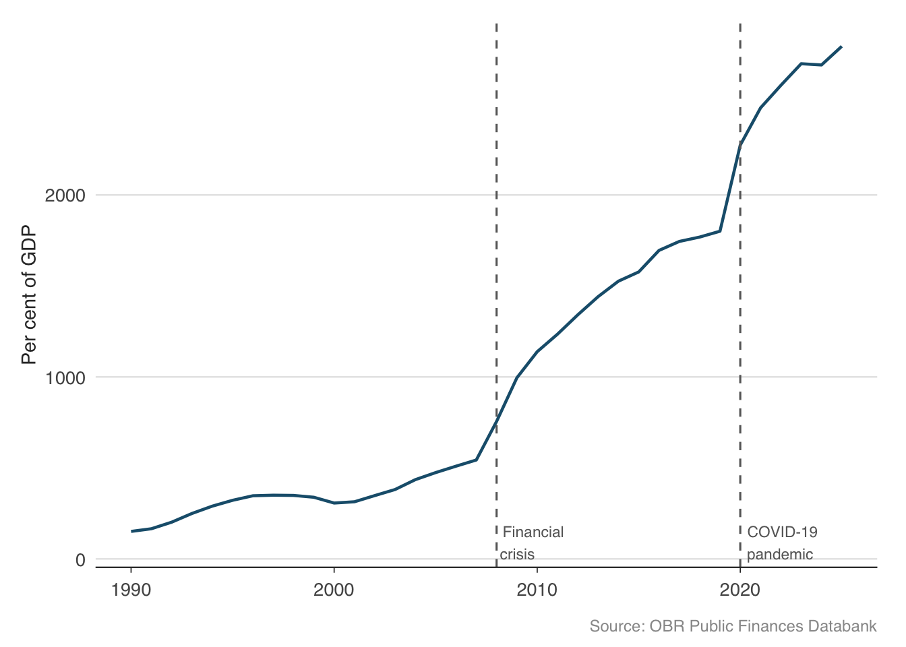
Two things stand out. First, debt-to-GDP roughly doubled after each crisis — from around 35% to 65% after the financial crisis, and from around 80% to over 100% after the pandemic. Second, between crises, the ratio barely fell. The UK ran persistent deficits even during the 2010s austerity years, so debt kept accumulating relative to GDP. This ratchet effect — debt jumps in bad times and does not come back down in good times — is a defining feature of modern fiscal dynamics in advanced economies.
11.2 Revenue: where does the money come from?
Understanding the composition of government revenue is essential for fiscal analysis. The UK government’s receipts come from a mix of direct taxes (income tax, corporation tax), indirect taxes (VAT, excise duties), and social contributions (National Insurance). The OBR’s databank provides a long-run breakdown.
receipts <- get_receipts()
head(receipts) year series value
1 1999-00 VAT (net of VAT refunds) 56.923
2 2000-01 VAT (net of VAT refunds) 59.040
3 2001-02 VAT (net of VAT refunds) 61.738
4 2002-03 VAT (net of VAT refunds) 63.988
5 2003-04 VAT (net of VAT refunds) 70.460
6 2004-05 VAT (net of VAT refunds) 72.311# See what series are available
unique(receipts$series) [1] "VAT (net of VAT refunds)"
[2] "VAT refunds"
[3] "Fuel duties"
[4] "Stamp duty land tax (includes Scottish LBTT and ATED)"
[5] "Stamp taxes on shares"
[6] "Tobacco duties"
[7] "Alcohol duties"
[8] "Vehicle excise duties"
[9] "Air passenger duty"
[10] "Insurance premium tax"
[11] "Climate change levy and carbon price floor"
[12] "Environmental levies (Renewables Obligation and Carbon Reduction Commitment)"
[13] "EU ETS"
[14] "Diverted profits tax"
[15] "Pay as your earn (PAYE) income tax"
[16] "Self assessed (SA) income tax"
[17] "Other income tax"
[18] "Capital gains tax"
[19] "Onshore corporation tax (includes Bank Surcharge)"
[20] "Offshore corporation tax"
[21] "Petroleum revenue tax"
[22] "Bank levy"
[23] "Licence fee receipts"
[24] "Inheritance tax"
[25] "National insurance contributions (NICs)"
[26] "Council tax"
[27] "Public sector interest and dividend receipts"
[28] "Public sector gross operating surplus (GOS)"
[29] "Other public sector taxes and receipts"
[30] "Public sector current receipts"
[31] "National accounts taxes" The major revenue categories tell us about the structure of the tax system and how it has evolved over time. Let us plot the four largest sources of revenue.
major_taxes <- receipts |>
filter(series %in% c(
"Income tax (gross of tax credits)",
"National insurance contributions",
"Value added tax",
"Corporation tax"
)) |>
mutate(cal_year = as.numeric(substr(year, 1, 4))) |>
filter(cal_year >= 2000)
ggplot(major_taxes, aes(x = cal_year, y = value, colour = series)) +
geom_line(linewidth = 0.7) +
scale_colour_macro() +
labs(
x = NULL, y = "GBP billions",
caption = "Source: OBR Public Finances Databank"
) +
theme_macro() +
theme(legend.position = "bottom")Income tax is by far the largest single source of revenue, followed by National Insurance contributions and VAT. Corporation tax is smaller but more volatile — it collapsed in 2008–09 as profits evaporated and surged after 2021 when the rate was increased. The broad stability of income tax and NICs reflects the fact that they are levied on employment income, which is less cyclically sensitive than corporate profits.
11.2.1 Monthly tax receipts from HMRC
For higher-frequency analysis, HMRC publishes monthly cash receipts for over 40 individual tax heads. This is one of the timeliest indicators of economic activity — when the economy slows, income tax receipts fall (fewer people employed, lower bonuses), VAT receipts fall (less consumer spending), and corporation tax receipts fall (lower profits).
monthly_receipts <- get_tax_receipts()
head(monthly_receipts) date tax_head description receipts_gbp_m
1 2016-04-01 aggregates_levy Aggregates Levy 40
2 2016-05-01 aggregates_levy Aggregates Levy 22
3 2016-06-01 aggregates_levy Aggregates Levy 20
4 2016-07-01 aggregates_levy Aggregates Levy 51
5 2016-08-01 aggregates_levy Aggregates Levy 27
6 2016-09-01 aggregates_levy Aggregates Levy 21receipts_main <- monthly_receipts |>
filter(description %in% c(
"Income Tax (PAYE and Self Assessment)",
"Value Added Tax",
"Corporation Tax (onshore)"
)) |>
filter(date >= as.Date("2016-04-01"))
ggplot(receipts_main, aes(x = date, y = receipts_gbp_m / 1000,
colour = description)) +
geom_line(linewidth = 0.5) +
scale_colour_macro() +
labs(
x = NULL, y = "GBP billions",
caption = "Source: HMRC"
) +
theme_macro() +
theme(legend.position = "bottom")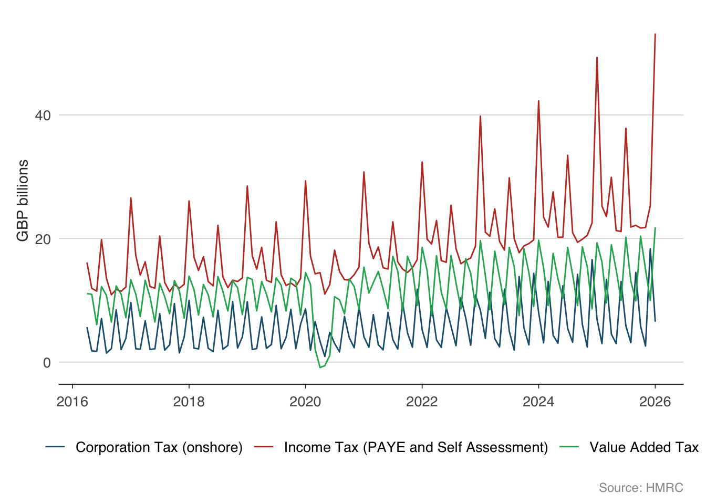
Tax receipts are strongly seasonal — income tax peaks in January (the self-assessment deadline) and corporation tax peaks in quarterly payment months. To see the underlying trend, it helps to work with year-on-year growth rates, which strip out the seasonal pattern.
total_receipts <- monthly_receipts |>
filter(description == "Total HMRC receipts") |>
arrange(date) |>
mutate(yoy_growth = 100 * (receipts_gbp_m / lag(receipts_gbp_m, 12) - 1)) |>
filter(!is.na(yoy_growth))
ggplot(total_receipts, aes(x = date, y = yoy_growth)) +
geom_line(colour = "#2C3E50", linewidth = 0.6) +
geom_hline(yintercept = 0, linewidth = 0.5, colour = "grey50") +
labs(
x = NULL, y = "Per cent",
caption = "Source: HMRC"
) +
theme_macro()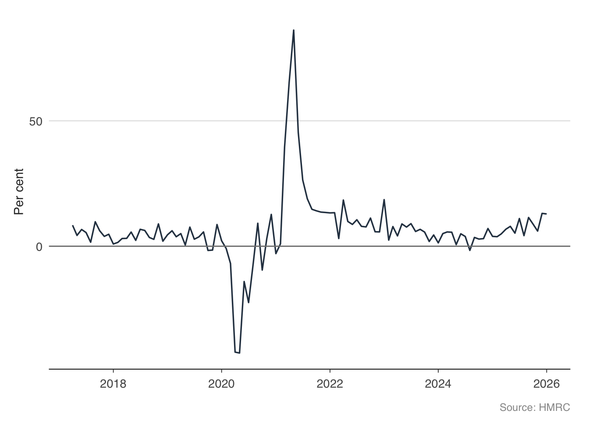
The year-on-year series reveals the major economic events clearly. The pandemic produces a deep collapse in receipts, followed by a rapid recovery. The recovery in receipts typically leads the recovery in GDP, because tax data arrives before the national accounts.
11.3 Expenditure: where does the money go?
The other side of the fiscal equation is spending. Total Managed Expenditure (TME) is the broadest measure of government spending, covering departmental budgets, welfare payments, debt interest, and public investment.
tme <- get_expenditure()
head(tme) year tme_bn
1 1946-47 4.400
2 1947-48 4.135
3 1948-49 4.516
4 1949-50 4.791
5 1950-51 5.106
6 1951-52 5.942tme_plot <- tme |>
mutate(cal_year = as.numeric(substr(year, 1, 4))) |>
filter(cal_year >= 2000)
ggplot(tme_plot, aes(x = cal_year, y = tme_bn)) +
geom_line(colour = "#C0392B", linewidth = 0.8) +
labs(
x = NULL, y = "GBP billions",
caption = "Source: OBR Public Finances Databank"
) +
theme_macro()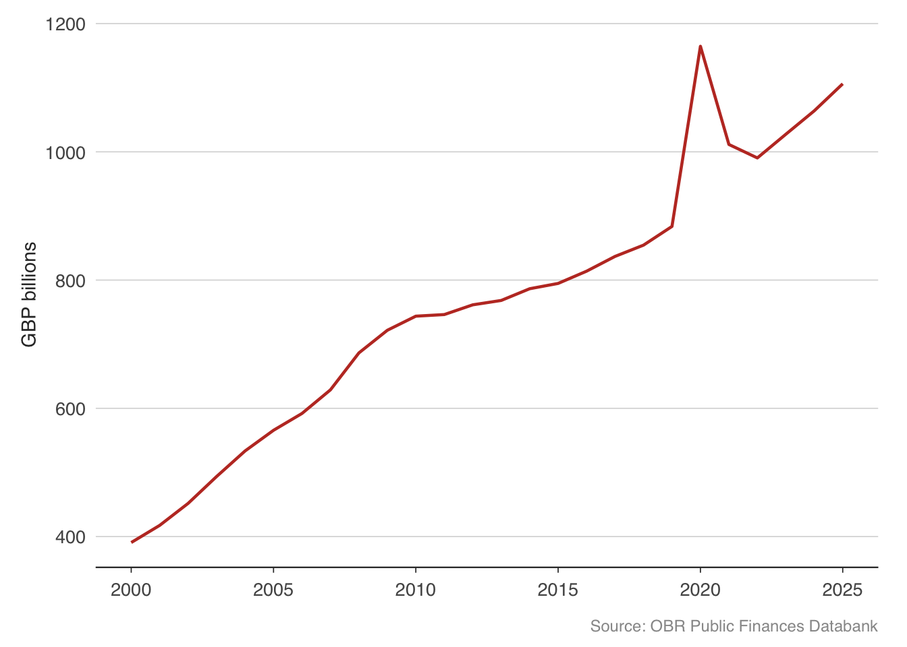
Government spending has risen relentlessly in nominal terms, but what matters for fiscal sustainability is spending relative to GDP. The OBR’s public finances databank provides this.
rev_spend <- pf |>
filter(series %in% c(
"Public sector current receipts",
"Total managed expenditure"
)) |>
mutate(cal_year = as.numeric(substr(year, 1, 4))) |>
filter(cal_year >= 1990)
ggplot(rev_spend, aes(x = cal_year, y = value, colour = series)) +
geom_line(linewidth = 0.7) +
scale_colour_macro() +
labs(
x = NULL, y = "Per cent of GDP",
caption = "Source: OBR Public Finances Databank"
) +
theme_macro()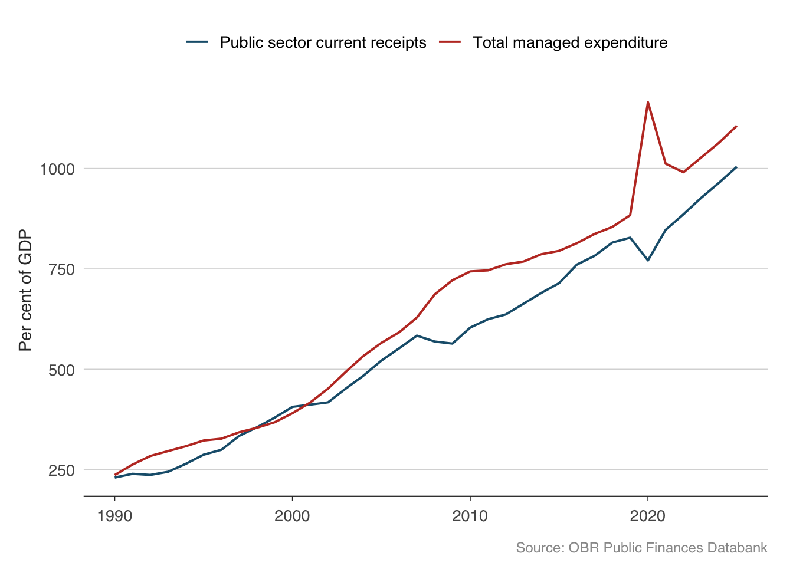
The gap between the red line (spending) and the blue line (revenue) is the deficit. When spending exceeds revenue, the government must borrow to make up the difference. Notice how the gap widens sharply during recessions — spending rises (welfare payments, stimulus) while revenue falls (lower tax take). This is the fiscal “automatic stabiliser” at work: the public finances cushion the economy without any deliberate policy action.
11.4 The deficit: public sector net borrowing
Public sector net borrowing (PSNB) is the government’s annual deficit — the gap between what it spends and what it receives. It is the flow that adds to the stock of debt each year.
psnb <- get_psnb()
head(psnb) year psnb_bn
1 1946-47 0.629
2 1947-48 0.079
3 1948-49 -0.496
4 1949-50 -0.587
5 1950-51 -0.466
6 1951-52 -0.069psnb_plot <- psnb |>
mutate(cal_year = as.numeric(substr(year, 1, 4))) |>
filter(cal_year >= 1990)
ggplot(psnb_plot, aes(x = cal_year, y = psnb_bn)) +
geom_col(fill = "#C0392B", alpha = 0.7) +
geom_hline(yintercept = 0, linewidth = 0.5) +
labs(
x = NULL, y = "GBP billions",
caption = "Source: OBR Public Finances Databank"
) +
theme_macro()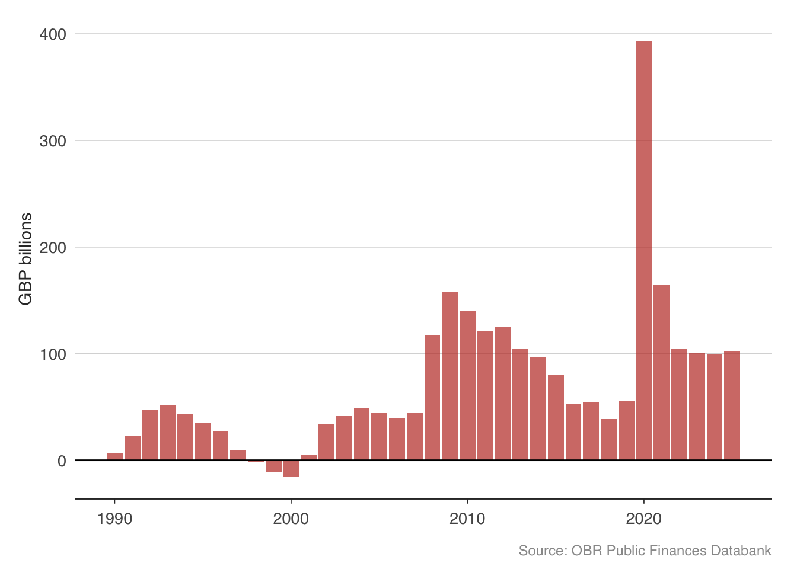
The chart tells a clear story. The UK ran modest deficits through the late 1990s and early 2000s, even achieving small surpluses during the dot-com boom. The financial crisis blew the deficit open to over £150 billion in 2009–10. A decade of austerity brought it back down, but never eliminated it. Then the pandemic produced borrowing of over £300 billion in 2020–21 — the largest peacetime deficit in UK history.
11.5 The debt-to-GDP identity
Why does the debt-to-GDP ratio change from year to year? There is an accounting identity that decomposes the change into two components:
\[ \Delta\left(\frac{D}{Y}\right) \approx (r - g)\frac{D}{Y} + \text{primary deficit} \]
where \(D\) is debt, \(Y\) is nominal GDP, \(r\) is the average interest rate paid on government debt, and \(g\) is the nominal GDP growth rate. The primary deficit is government spending minus revenue, excluding interest payments.
The first term, \((r - g)(D/Y)\), is the interest-growth differential. When the interest rate on debt exceeds the growth rate of the economy, the debt ratio rises automatically — the government is paying more in interest than the economy is growing. When \(g > r\), the opposite holds: the economy “grows out of” its debt. For most of the post-2008 period, low interest rates meant \(r < g\), which helped contain the debt ratio despite large deficits. As rates rose in 2022–23, this dynamic reversed.
The second term is the primary deficit — what the government directly controls through spending and tax decisions. Running a primary surplus pushes the debt ratio down; running a primary deficit pushes it up.
This identity is fundamental. Every fiscal sustainability analysis — whether by the OBR, the IMF, or the European Commission — ultimately reduces to asking whether a government can plausibly generate primary surpluses large enough to offset an unfavourable interest-growth differential.
# A tibble: 6 × 4
year Public sector net borr…¹ Public sector net de…² Central government d…³
<chr> <dbl> <dbl> <dbl>
1 1946-47 0.629 NA 0.504
2 1947-48 0.079 NA 0.527
3 1948-49 -0.496 NA 0.52
4 1949-50 -0.587 NA 0.519
5 1950-51 -0.466 NA 0.531
6 1951-52 -0.069 NA 0.579
# ℹ abbreviated names: ¹`Public sector net borrowing`,
# ²`Public sector net debt`, ³`Central government debt interest, net of APF`11.6 OBR forecasts versus outcomes
The OBR publishes forecasts for key fiscal and economic variables at each fiscal event. How accurate are they? This is not merely an academic question — the credibility of fiscal plans depends on the reliability of the growth forecasts underpinning them. If the OBR systematically over-predicts growth, projected revenues will not materialise, and the public finances will deteriorate relative to plan.
The get_forecasts() function provides the complete history of OBR forecasts. Let us start with borrowing forecasts — the variable that matters most for fiscal policy.
# Available forecast series
list_forecast_series() series sheet description
1 PSNB £PSNB Public sector net borrowing (£bn)
2 PSNB_pct PSNB Public sector net borrowing (% of GDP)
3 PSND PSND Public sector net debt (% of GDP)
4 receipts £PSCR Public sector current receipts (£bn)
5 receipts_pct PSCR Public sector current receipts (% of GDP)
6 expenditure £TME Total managed expenditure (£bn)
7 expenditure_pct TME Total managed expenditure (% of GDP)
8 GDP NGDP Nominal GDP growth (%)
9 real_GDP UKGDP Real GDP growth (%)
10 CPI CPI CPI inflation (%)# Download borrowing forecasts (% of GDP)
borrowing_forecasts <- get_forecasts(series = "PSNB_pct")
head(borrowing_forecasts) series forecast_date fiscal_year value
1 PSNB_pct March 1977 1976-77 7.00
94 PSNB_pct March 1977 1977-78 6.00
95 PSNB_pct April 1978 1977-78 4.00
188 PSNB_pct April 1978 1978-79 5.25
189 PSNB_pct June 1979 1978-79 5.50
282 PSNB_pct June 1979 1979-80 4.50Each row represents one forecast: the OBR’s prediction at a given forecast_date for borrowing in a given fiscal_year. By comparing forecasts made at different horizons to the actual outturn, we can assess accuracy.
# Extract the calendar year of the forecast target
borrowing_plot <- borrowing_forecasts |>
mutate(target_year = as.numeric(substr(fiscal_year, 1, 4))) |>
filter(target_year >= 2010, target_year <= 2025)
ggplot(borrowing_plot,
aes(x = target_year, y = value,
group = forecast_date, colour = forecast_date)) +
geom_line(alpha = 0.4, linewidth = 0.4) +
labs(
x = "Fiscal year (starting)",
y = "PSNB (per cent of GDP)",
caption = "Source: OBR"
) +
theme_macro() +
theme(legend.position = "none")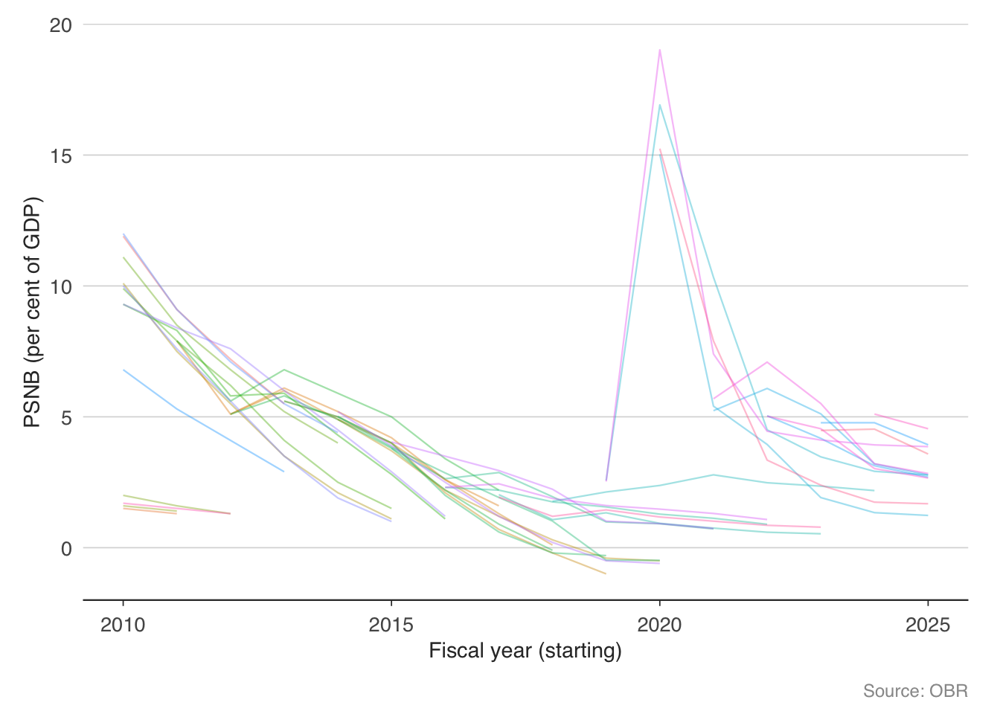
The “spaghetti chart” above shows every OBR borrowing forecast since the institution was created. Each line represents a different fiscal event. The fan of lines reveals how dramatically the outlook has shifted — particularly around the pandemic, when borrowing surged far beyond any previous forecast.
11.6.1 GDP growth forecasts
GDP growth is the single most important input to fiscal forecasts, because it drives both revenue (tax receipts grow with the economy) and spending (welfare costs fall when unemployment drops). Let us compare the OBR’s real GDP growth forecasts to what actually happened.
gdp_forecasts <- get_forecasts(series = "real_GDP")
head(gdp_forecasts) series forecast_date fiscal_year value
1 real_GDP November 1983 1982 2
2 real_GDP March 1984 1982 2
87 real_GDP November 1983 1983 3
88 real_GDP March 1984 1983 3
89 real_GDP November 1984 1983 3
90 real_GDP March 1985 1983 3gdp_plot <- gdp_forecasts |>
mutate(target_year = as.numeric(substr(fiscal_year, 1, 4))) |>
filter(target_year >= 2010, target_year <= 2025)
ggplot(gdp_plot,
aes(x = target_year, y = value,
group = forecast_date, colour = forecast_date)) +
geom_line(alpha = 0.4, linewidth = 0.4) +
geom_hline(yintercept = 0, linetype = "dashed", colour = "grey50") +
labs(
x = "Fiscal year (starting)",
y = "Real GDP growth (per cent)",
caption = "Source: OBR"
) +
theme_macro() +
theme(legend.position = "none")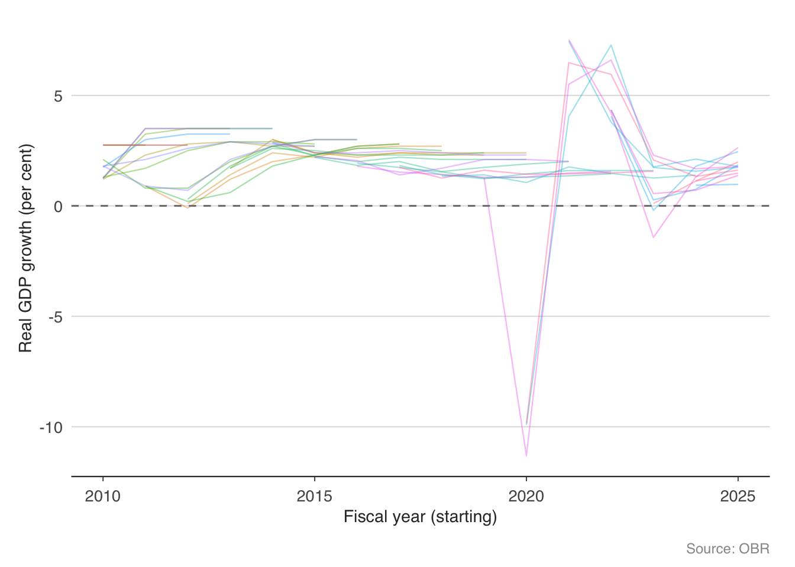
The OBR’s GDP forecasts cluster around 1.5–2% in “normal” years, which reflects the UK’s trend growth rate. The pandemic year is the obvious outlier — no forecaster predicted a 10% contraction. More interesting are the years where the OBR consistently predicted stronger growth than materialised (the early 2010s), which the OBR itself has attributed to the unexpectedly large fiscal multipliers during the austerity period.
11.6.2 Receipts: forecast versus outturn
Revenue forecasts are where the rubber meets the road for fiscal policy. If receipts undershoot the forecast, the chancellor faces a choice: borrow more, cut spending, or raise taxes.
receipts_forecasts <- get_forecasts(series = "receipts")
head(receipts_forecasts) series forecast_date fiscal_year value
1 receipts March 1990 1989-90 203.0
74 receipts March 1990 1990-91 219.0
75 receipts November 1990 1990-91 218.7
76 receipts March 1991 1990-91 217.0
147 receipts March 1990 1991-92 229.0
149 receipts March 1991 1991-92 226.0receipts_plot <- receipts_forecasts |>
mutate(target_year = as.numeric(substr(fiscal_year, 1, 4))) |>
filter(target_year >= 2010, target_year <= 2025)
ggplot(receipts_plot,
aes(x = target_year, y = value,
group = forecast_date, colour = forecast_date)) +
geom_line(alpha = 0.4, linewidth = 0.4) +
labs(
x = "Fiscal year (starting)",
y = "Receipts (GBP billions)",
caption = "Source: OBR"
) +
theme_macro() +
theme(legend.position = "none")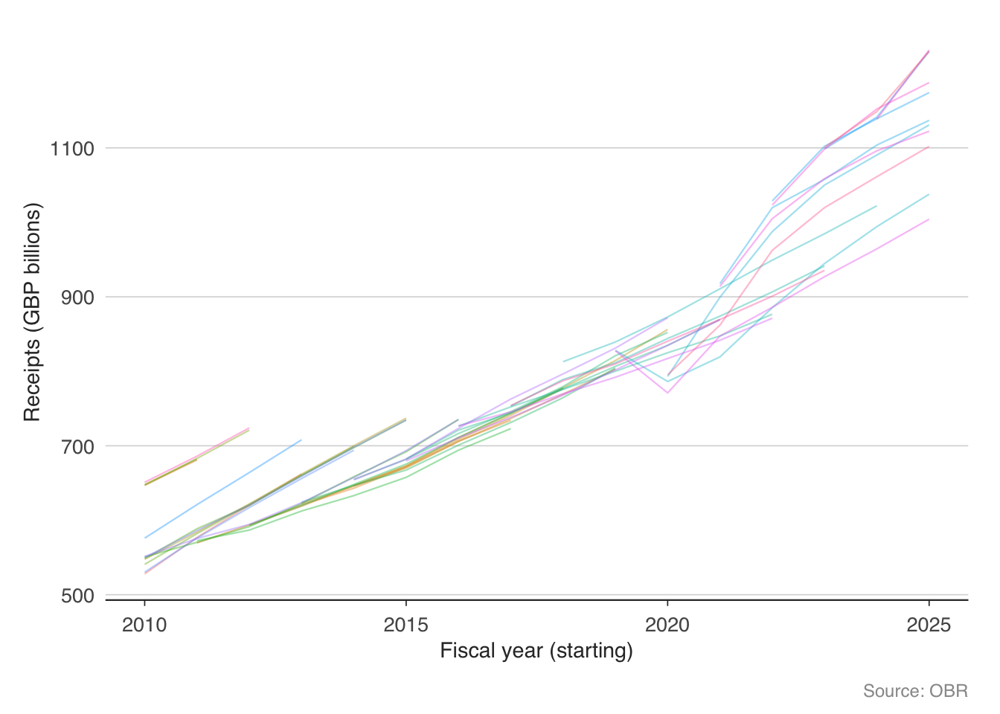
The receipts fan chart shows a persistent upward drift — each successive forecast tends to be higher than the last, reflecting both economic growth and policy changes (tax rises). But notice the sharp downward revisions in 2020, when the pandemic caused receipts to fall well below any prior forecast.
11.7 Cumulative receipts: tracking the fiscal year in real time
For fiscal monitoring, the most useful exercise is to compare cumulative receipts in the current financial year to previous years. If receipts are running ahead of the prior year, borrowing will likely undershoot; if behind, borrowing will overshoot.
total_monthly <- monthly_receipts |>
filter(description == "Total HMRC receipts") |>
rename(total = receipts_gbp_m) |>
mutate(
fiscal_year = ifelse(
as.numeric(format(date, "%m")) >= 4,
as.numeric(format(date, "%Y")),
as.numeric(format(date, "%Y")) - 1
),
fiscal_month = (as.numeric(format(date, "%m")) - 4) %% 12 + 1
) |>
group_by(fiscal_year) |>
arrange(fiscal_month) |>
mutate(cumulative = cumsum(total))
recent_years <- total_monthly |>
filter(fiscal_year >= 2019)
ggplot(recent_years,
aes(x = fiscal_month, y = cumulative / 1000,
colour = factor(fiscal_year))) +
geom_line(linewidth = 0.7) +
labs(
x = "Month of fiscal year",
y = "GBP billions",
colour = "Fiscal year",
caption = "Source: HMRC"
) +
scale_x_continuous(
breaks = 1:12,
labels = c("Apr", "May", "Jun", "Jul", "Aug",
"Sep", "Oct", "Nov", "Dec", "Jan",
"Feb", "Mar")
) +
theme_macro() +
theme(legend.position = "bottom")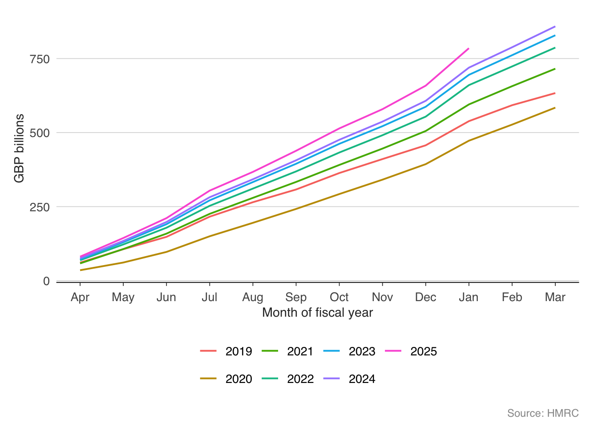
The cumulative chart makes the pandemic fiscal shock vivid — the 2020 line falls well below the prior year, as income tax, VAT, and corporation tax all collapsed simultaneously. The recovery in 2021 and 2022 is equally striking, with receipts surging above pre-pandemic trends thanks to inflation (which boosts nominal tax receipts) and a strong labour market.
11.8 The income tax distribution
Income tax is the UK’s largest single source of revenue. Understanding who pays it — and how much — is essential for evaluating tax policy. HMRC publishes detailed statistics on income tax liabilities by income band.
it_stats <- get_income_tax_stats()
head(it_stats) tax_year income_range income_lower_gbp taxpayers_thousands total_income_gbp_m
1 2022-23 12570 12570 2870 39300
2 2022-23 15000 15000 5740 100000
3 2022-23 20000 20000 9960 246000
4 2022-23 30000 30000 9710 373000
5 2022-23 50000 50000 4850 319000
6 2022-23 100000 100000 754 90200
tax_liability_gbp_m average_rate_pct average_tax_gbp
1 607 1.5 212
2 4930 4.9 859
3 22000 8.9 2210
4 45700 12.3 4700
5 60100 18.8 12400
6 26300 29.1 34800# Filter to the latest available tax year, exclude the "All Ranges" total
latest_year <- it_stats |>
filter(income_range != "All Ranges") |>
filter(tax_year == max(tax_year)) |>
filter(!is.na(tax_liability_gbp_m))
ggplot(latest_year,
aes(x = reorder(income_range, income_lower_gbp),
y = tax_liability_gbp_m / 1000)) +
geom_col(fill = "#1B5E7B", alpha = 0.8) +
labs(
x = "Income range (GBP)",
y = "Tax liability (GBP billions)",
caption = "Source: HMRC Table 2.5"
) +
theme_macro() +
theme(axis.text.x = element_text(angle = 45, hjust = 1, size = 7))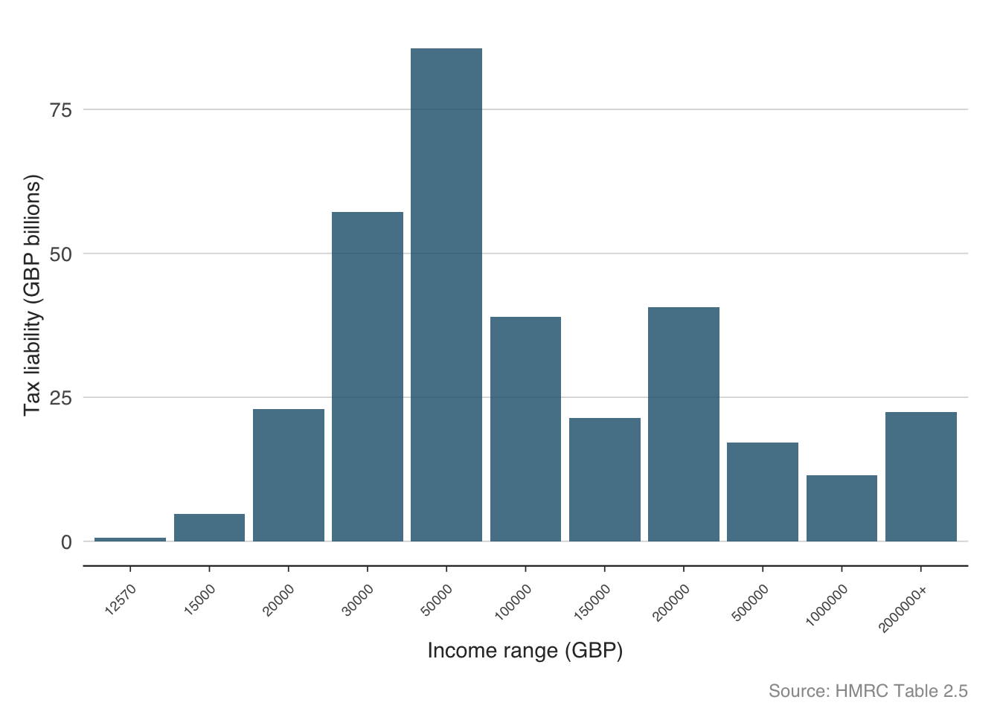
The distribution of income tax is highly concentrated. A relatively small number of high earners contribute a disproportionate share of total revenue. This has important implications for fiscal policy: tax rises targeted at high earners can raise significant revenue, but they also make the tax base more volatile (high earners’ income is more sensitive to the business cycle) and more responsive to behavioural changes (tax planning, emigration).
ggplot(latest_year |> filter(!is.na(average_rate_pct)),
aes(x = income_lower_gbp / 1000, y = average_rate_pct)) +
geom_point(colour = "#C0392B", size = 2.5) +
geom_line(colour = "#C0392B", linewidth = 0.6) +
labs(
x = "Income (GBP thousands)",
y = "Average tax rate (per cent)",
caption = "Source: HMRC Table 2.5"
) +
theme_macro()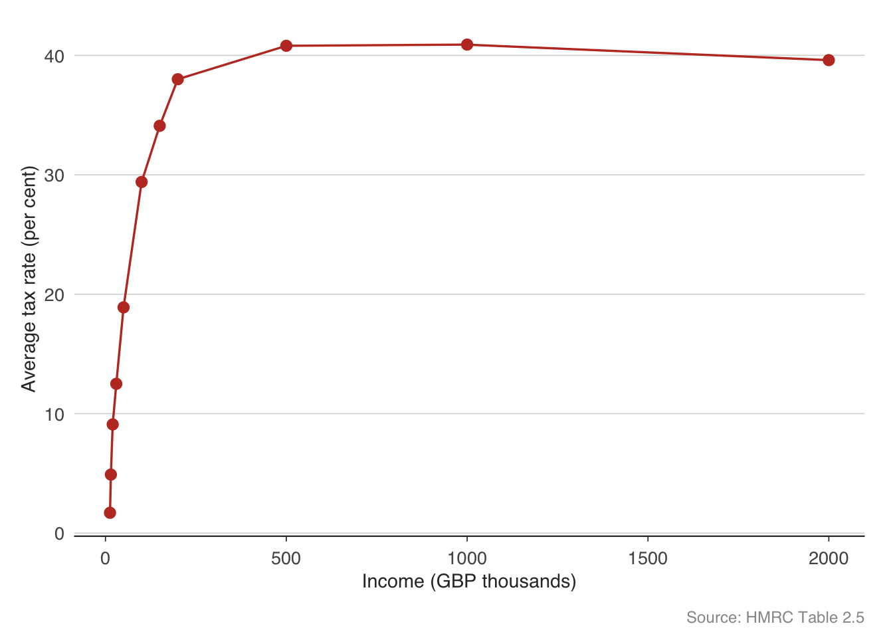
The average tax rate rises with income, reflecting the progressive structure of the UK income tax system. The personal allowance (£12,570) means those at the bottom pay little or no tax. The basic rate (20%), higher rate (40%), and additional rate (45%) create a step function, smoothed by the gradual withdrawal of the personal allowance above £100,000.
11.9 The Economic and Fiscal Outlook
At each Budget or fiscal event, the OBR publishes an Economic and Fiscal Outlook (EFO) containing its latest projections. The get_efo_fiscal() function returns the detailed fiscal projections from the most recent EFO.
efo <- get_efo_fiscal()
head(efo) fiscal_year series value_bn
1 2025-26 Current receipts 1235.253
2 2026-27 Current receipts 1303.793
3 2027-28 Current receipts 1375.408
4 2028-29 Current receipts 1427.438
5 2029-30 Current receipts 1491.944
6 2030-31 Current receipts 1551.485# What fiscal series are available?
unique(efo$series)[1] "Current receipts" "Current expenditure" "Depreciation"
[4] "Current budget deficit" "Gross investment1" "Less Depreciation"
[7] "Net investment" "Net borrowing" efo_main <- efo |>
filter(series %in% c(
"Current receipts",
"Total managed expenditure",
"Public sector net borrowing"
))
ggplot(efo_main,
aes(x = fiscal_year, y = value_bn, fill = series)) +
geom_col(position = "dodge", alpha = 0.8) +
scale_fill_macro() +
labs(
x = NULL, y = "GBP billions",
caption = "Source: OBR Economic and Fiscal Outlook"
) +
theme_macro() +
theme(
axis.text.x = element_text(angle = 45, hjust = 1),
legend.position = "bottom"
)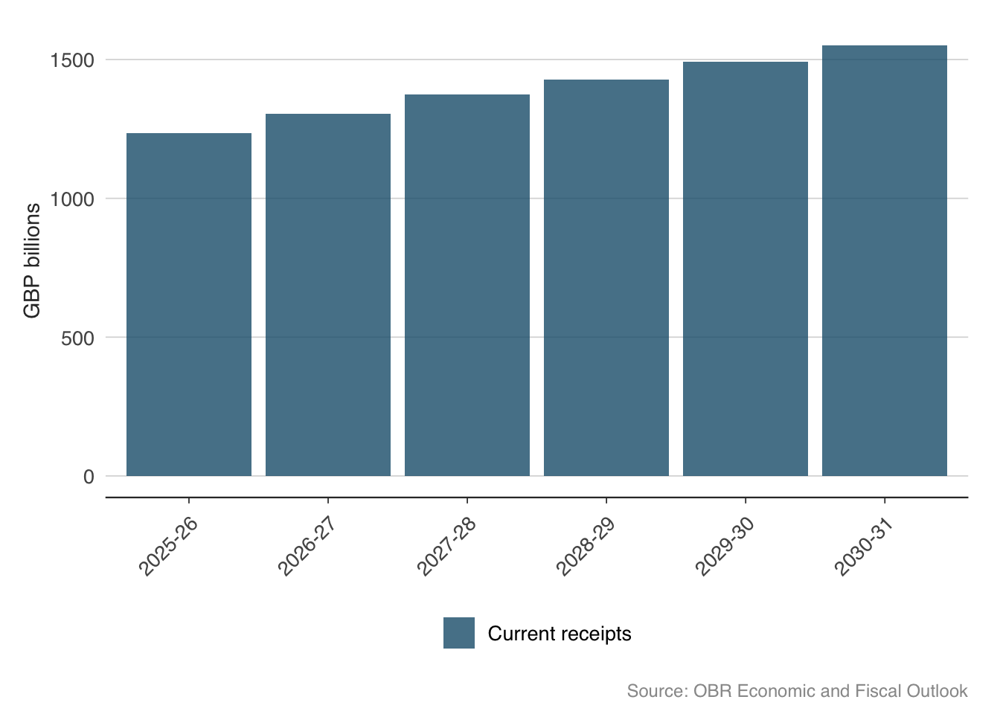
11.10 Long-run fiscal sustainability
Looking beyond the five-year forecast horizon, fiscal sustainability depends on structural pressures — an ageing population, rising healthcare costs, and the trajectory of the state pension. The OBR’s Fiscal Sustainability Report explores these issues in detail. The obr package provides access to the OBR’s long-run pension projections.
pensions <- get_pension_projections()
head(pensions) scenario_type scenario fiscal_year pct_gdp
1 Demographic scenarios Central projection 2023-24 4.555128
2 Demographic scenarios Central projection 2024-25 4.947287
3 Demographic scenarios Central projection 2025-26 5.063432
4 Demographic scenarios Central projection 2026-27 5.130767
5 Demographic scenarios Central projection 2027-28 5.045365
6 Demographic scenarios Central projection 2028-29 5.014687ggplot(pensions,
aes(x = as.numeric(substr(fiscal_year, 1, 4)),
y = pct_gdp,
colour = scenario)) +
geom_line(linewidth = 0.6) +
facet_wrap(~ scenario_type, scales = "free_y") +
labs(
x = NULL, y = "Per cent of GDP",
caption = "Source: OBR Fiscal Sustainability Report"
) +
theme_macro() +
theme(legend.position = "none")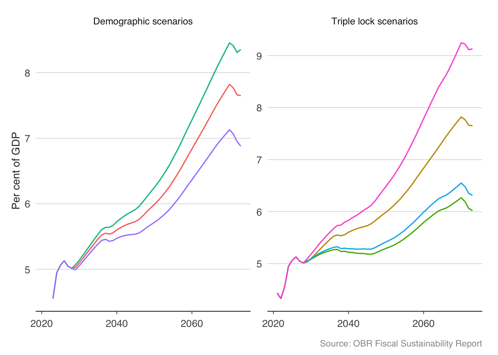
State pension spending is projected to rise from around 5% of GDP today to 8–9% by the 2070s under most scenarios. The triple lock — which uprates the state pension by the highest of inflation, earnings growth, or 2.5% — is the key driver. The OBR estimates that the triple lock alone adds around 1% of GDP to pension spending over the long run compared to earnings-only uprating. This is one of the largest unfunded fiscal commitments in the UK, and its sustainability is a recurring theme in fiscal debates.
11.11 Fiscal multipliers
The fiscal multiplier measures how much GDP changes when government spending changes by one unit. If the government spends an additional £1 billion and GDP rises by £1.5 billion, the multiplier is 1.5. This is one of the most contested numbers in macroeconomics.
The multiplier depends on the state of the economy. When the economy is at full capacity, extra government spending may simply crowd out private spending — the multiplier is small (perhaps 0.5). When the economy is in a deep recession with idle resources, the multiplier can be much larger (1.5 to 2.0 or more), because extra spending puts unemployed workers back to work without displacing private activity. This state-dependence is why the debate over austerity after 2010 was so fierce: critics argued that cutting spending during a recession, when multipliers were large, was particularly costly.
We can estimate a simple fiscal multiplier using a VAR model. The idea is to identify government spending shocks — unexpected changes in spending — and trace their effect on GDP over time using impulse response functions. The identification follows Blanchard and Perotti (2002): government spending does not respond to GDP within the quarter, so ordering spending first in the VAR is a valid identification strategy.
library(vars)
# Construct quarterly fiscal data from ONS and OBR
# You would need:
# - Real government consumption (ONS)
# - Real GDP (ONS)
# - Total tax revenue (OBR/HMRC)
# Convert to growth rates
# fiscal_ts <- data.frame(dg, dy, dt)
# Estimate VAR with spending ordered first
# var_model <- VAR(fiscal_ts, p = 4, type = "const")
# Impulse response: effect of spending shock on GDP
# irf_result <- irf(var_model, impulse = "dg", response = "dy",
# n.ahead = 20, boot = TRUE, ci = 0.68)
# plot(irf_result)Estimates in the literature range widely. Ramey (2019) surveys the evidence and finds most estimates between 0.6 and 1.5, with the central tendency around 0.8 in normal times. During recessions or at the zero lower bound for interest rates, estimates tend to be higher — Christiano, Eichenbaum, and Rebelo (2011) find multipliers above 2 when monetary policy is constrained. The IMF’s retrospective analysis of the eurozone austerity programmes found that fiscal multipliers in 2010–12 were substantially larger than the 0.5 assumed in real time, which partly explains why austerity produced deeper recessions than expected.
11.12 Exercises
Using
obr, download the Public Finances Databank. Plot both public sector net debt and public sector net borrowing on the same chart (as % of GDP) since 1990. How do the two series relate to each other?Using
hmrc, download monthly tax receipts and plot year-on-year growth in income tax, VAT, and corporation tax on the same chart. Which tax is most volatile? Why?Download the OBR’s GDP growth and borrowing forecasts using
get_forecasts(). For each fiscal year from 2015–16 to 2023–24, compare the forecast made one year ahead to the eventual outturn. Which years had the largest forecast errors?Using
get_income_tax_stats(), calculate what share of total income tax revenue comes from taxpayers earning above £100,000. How does this compare to their share of the taxpayer population?Plot the OBR’s long-run pension projections. Under the triple lock, how much larger is projected pension spending in 2050 compared to an earnings-only uprating scenario?
Construct a “fiscal dashboard” that combines: (a) the latest month’s tax receipts growth, (b) the current debt-to-GDP ratio, (c) the OBR’s latest borrowing forecast, and (d) how cumulative receipts compare to the prior year. What does your dashboard say about the current fiscal position?
Using the debt-to-GDP identity, calculate the interest-growth differential \((r - g)\) for the UK from 2000 to the present. In which years did it favour debt reduction (i.e., \(g > r\))?